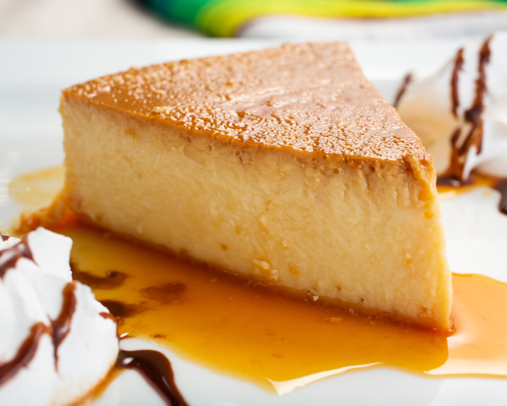
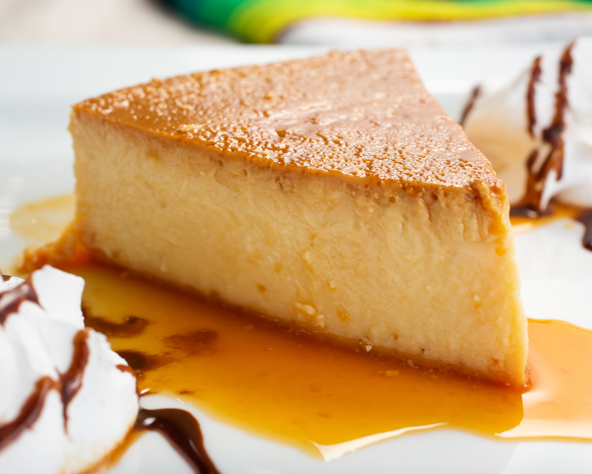

Arroz con Gandules
Traditional Puerto Rican rice with pigeon peas dish.
Ingredients:
- 2 cups white rice
- 1 can (15 oz) pigeon peas
- 4 cups water
- 1/2 cup sofrito sauce
- 2 tablespoons olive oil
- 1 teaspoon salt
Instructions:
- Rinse rice under cold water until water runs clear.
- In a large pot, heat olive oil over medium heat. Add sofrito and sauté for 2-3 minutes.
- Add rice, water, pigeon peas, and salt. Bring to a boil, then reduce heat to low, cover, and simmer for 20-25 minutes, or until rice is cooked and liquid is absorbed.
- Fluff rice with a fork before serving.

Mofongo
A classic Puerto Rican dish made with mashed plantains.
Ingredients:
- 2 green plantains
- 4 cloves garlic, minced
- 1/4 cup olive oil
- Salt to taste
Instructions:
- Peel and slice plantains into chunks.
- Heat olive oil in a skillet over medium heat. Fry plantains until golden brown.
- Remove plantains from skillet and mash with garlic and salt.
- Form mashed plantains into balls and serve hot.

Tostones
Fried green plantains, a popular Puerto Rican appetizer.
Ingredients:
- 2 green plantains
- Oil for frying
- Salt to taste
Instructions:
- Peel plantains and cut them into 1-inch slices.
- Heat oil in a skillet over medium-high heat.
- Fry plantain slices until golden brown, then remove and drain excess oil.
- Using a tostonera or flat surface, flatten the fried plantain slices.
- Return flattened plantains to the skillet and fry again until crispy.
- Sprinkle with salt and serve hot.

Pastelón
Puerto Rican plantain "lasagna" with ground beef and cheese.
Ingredients:
- 4 ripe plantains
- 1 lb ground beef
- 1 onion, diced
- 2 cloves garlic, minced
- 1 bell pepper, diced
- 1 cup tomato sauce
- 2 cups shredded cheese
- Salt and pepper to taste
Instructions:
- Peel and slice plantains lengthwise, then boil until tender.
- In a skillet, brown ground beef with onion, garlic, and bell pepper. Season with salt and pepper.
- Layer half of the boiled plantains in a baking dish, followed by half of the ground beef mixture and half of the cheese. Repeat layers.
- Bake at 350°F (175°C) for 20-25 minutes, or until cheese is melted and bubbly.
- Serve hot and enjoy!


 
